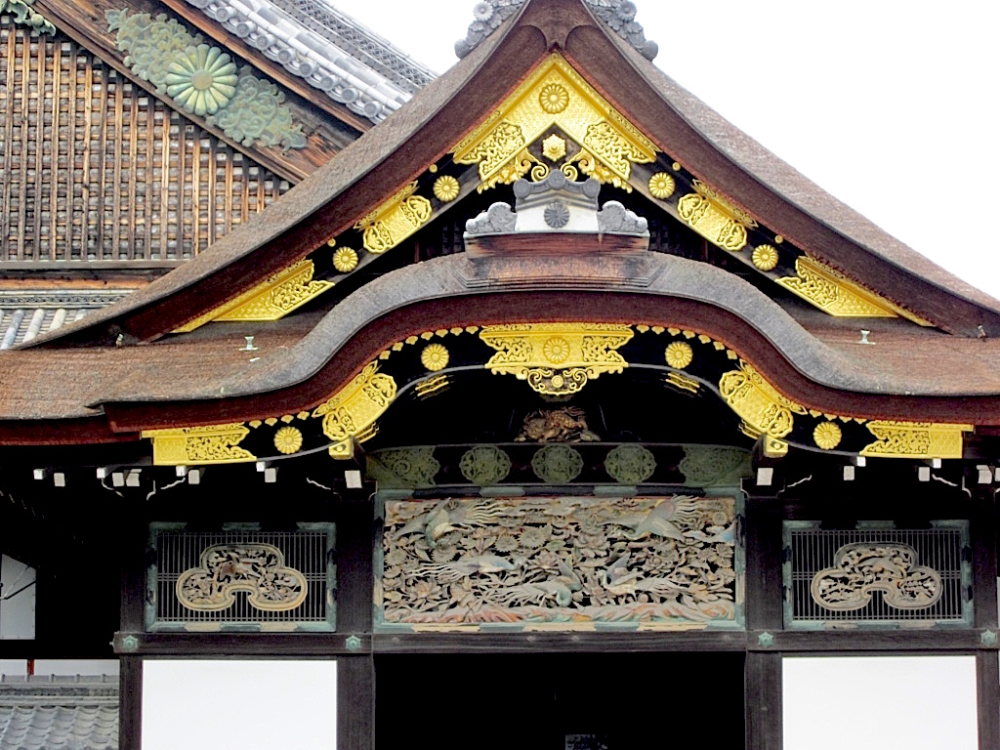
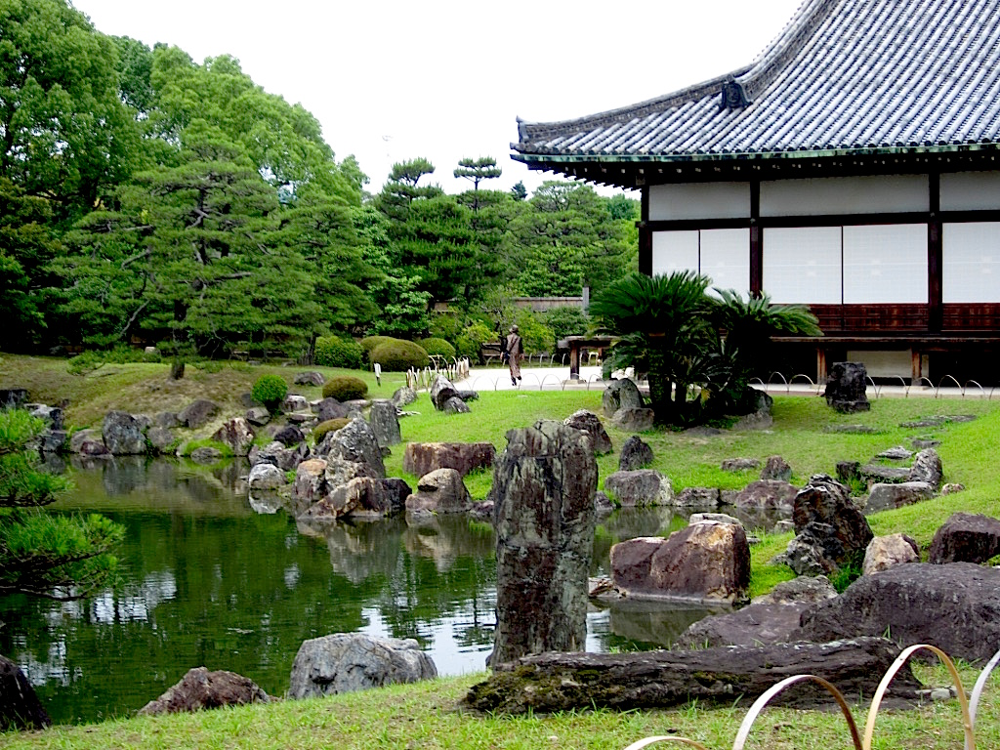
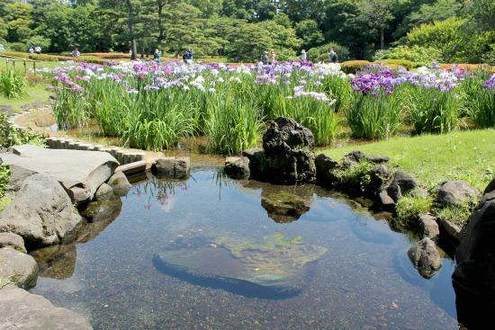
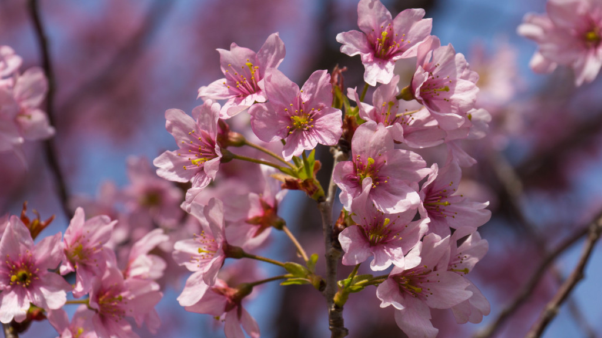
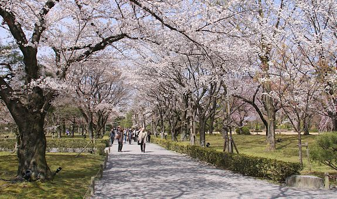

Nijo Castle is one of UNESCO's World Heritage Sites which was the residence of Tokugawa Ieyasu, the first shogun during the Edo Japanese Period. Shogun means military commander or general of Japan. It is said that Nijo Castle is the best surviving example of Japanese palace architecture.
It was ChaMike's very first stop in Kyoto, our hotel staff recommended to go here first so we can still witness the gorgeous display of Sakuras/ Cherry Blossoms.
Nijo Castle has 3 main areas: Honmaru, Ninomaru and some gardens surrounding the area. Ninomaru Palace is the main attraction of the castle, Ninomaru is the secondary circle of defense during the old times.
“A relaxing and
calming ambiance”
Upon entering the palace we were asked to remove our shoes and informed that picture taking is not allowed inside. The palace is still in its mint condition where the flooring are called nightingale floors because they squeak when stepped on for security purposes. Ninomaru also has elegant replica wall paintings, the original paintings were kept for preservation- take note that they don't allow sketching as well.
After a few walks we saw a traditional Japanese landscape garden with large pond. Ninomaru Garden has a relaxing and calming ambiance.
Gardens are all over Nijo Castle, if you are looking for a perfect venue to spot sakura trees Nijo Castle is the place to go. It was already on the third week of April when we went there and based on our research the cherry blossoms were in full bloom the week before our visit but luckily we still found lots of sakuras! It was as if they waited for us to see them.
Sakura or Cherry Blossoms are flowers mostly in pink color that bloom in some countries such as: Europe, China, United States and Japan.
So seeing a sakura is on top of my Japan list so you can just imagine my delight when I saw the sprawling sakura trees all over the place.
After seeing the beautiful group of cherry blossoms we then saw a walkway full of Sakuras. It was the loveliest site! Though you can see some trees were beginning to wither nevertheless it was picture perfect.
Nijo Castle is a great way to start your Kyoto Adventure. It has impressive architecture, rich history and gorgeous sakura trees.
Next >